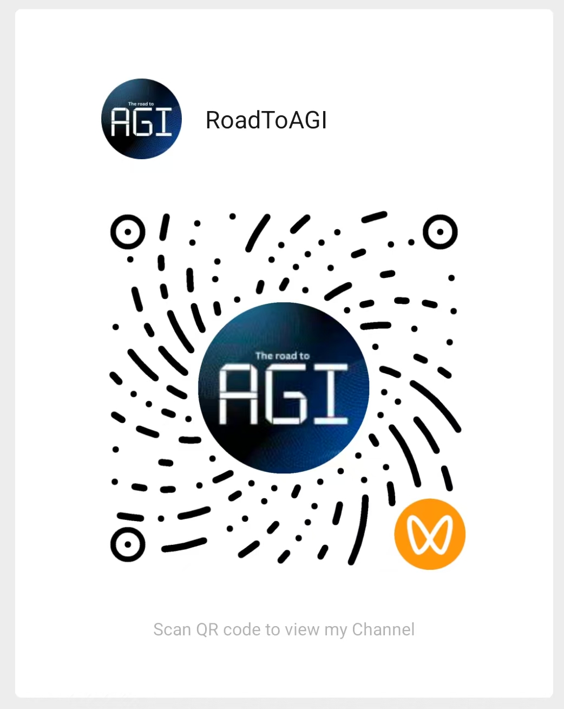
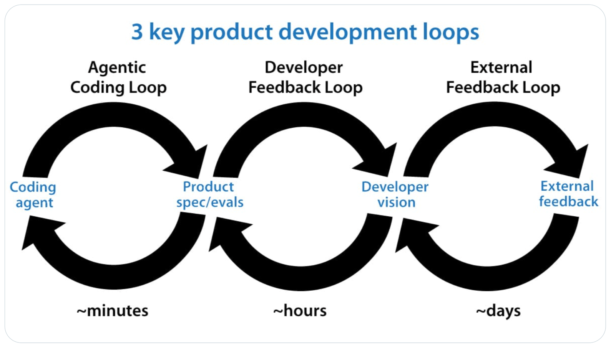
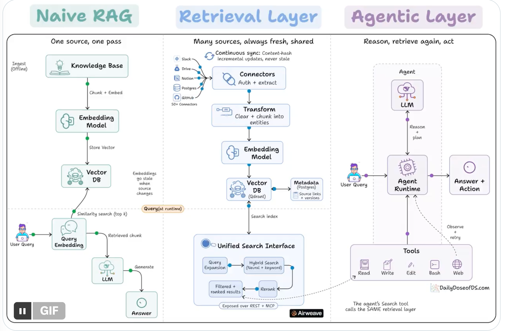
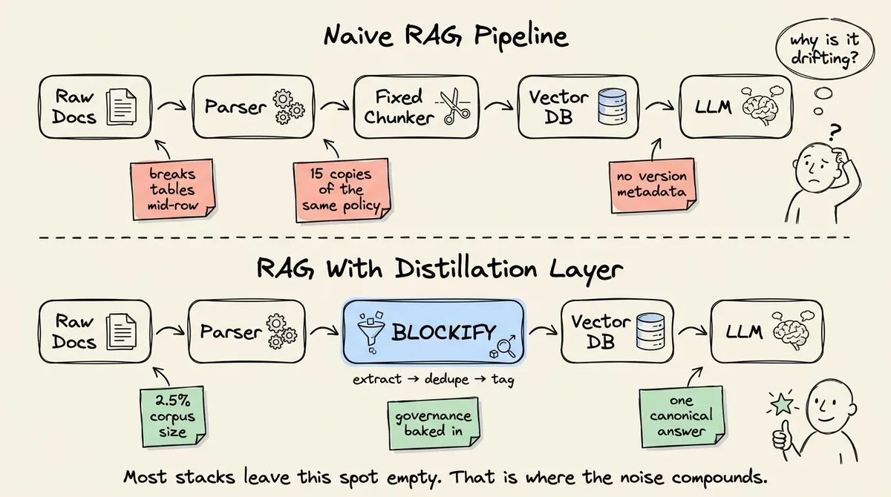
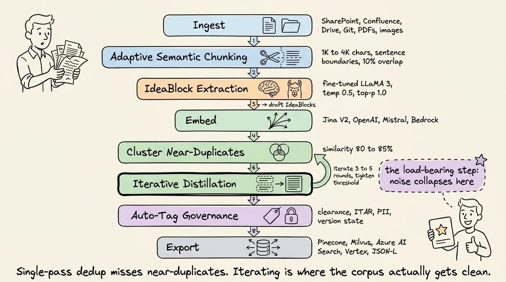
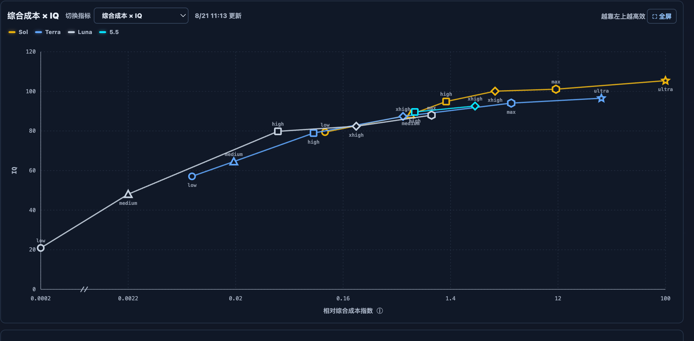
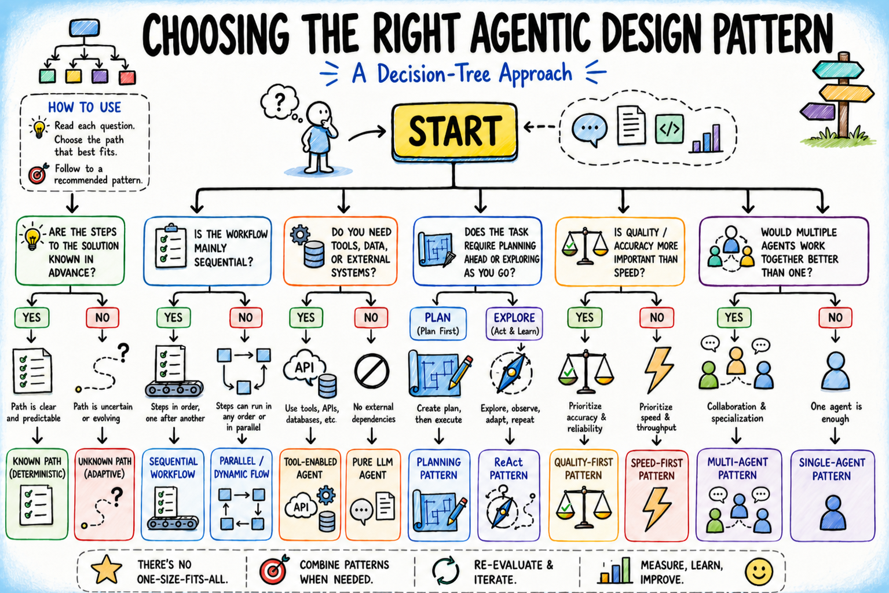
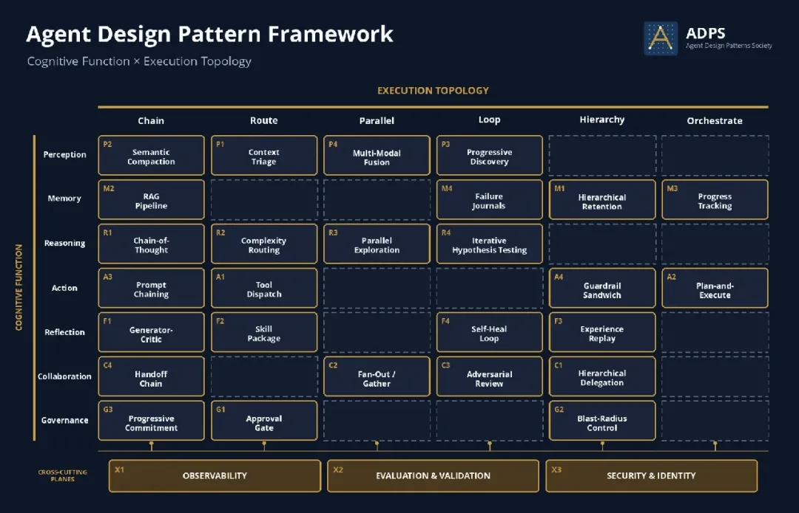
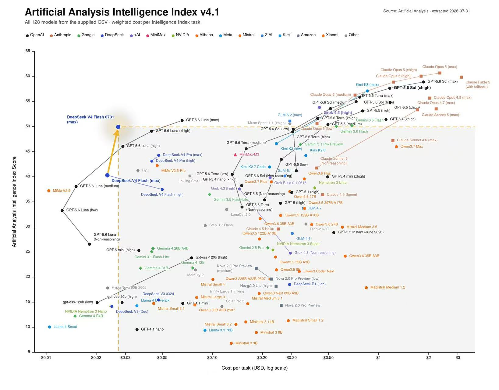

AI Agent：
开发者的“硅基队友”
从 AI 工具到 AI 队友：企业 IT 的 AI Coding 实战
×
IT
01 / 基础与方法
02 / Skill 与团队经验
03 / Spec、Loop 与 Token
04 / LLM Observability
05 / 运行边界与开发方式
06 / 知识、模型与 Multi-Agent
本次 AI Agent 开发者团队分享分为两场：基础篇与进阶篇。
从真实工作出发，把 AI 变成队友。
帮助过多家年营收几千万到亿的跨境电商企业落地 AI。

AI Agent：开发者的硅基队友03
聊天 AI 是好的开始，
但不应该是终点。
过去：问一个问题
我有一个问题
↓
AI 给我一个答案
现在：完成一件事
我有一个目标
↓
AI 读、改、跑、验证
企业 IT 的日常不是“我不知道答案”，而是“我有一件事要完成”。04
先看任务，再选择
最合适的 AI 方式。
选择够用的模型。
推理强不等于适合高频小任务。代码、速度、上下文、成本和工具调用能力，都要放回真实工作里比较。
它不是更会聊天，
而是多了一个行动闭环。
目标
你说清楚要达到什么结果。
规划
AI 拆解任务，决定先做什么。
工具
读文件、搜索、运行命令、跑测试。
证据
看到真实结果，而不是凭空猜。
下一步
根据结果继续行动，直到验收。
Agent：做一步、看结果、再决定下一步。
给订单模块增加一个导出功能。
先理解项目，找到订单导出相关代码。告诉我准备怎么改，先不要修改。
方案可以，开始修改。只修改订单模块，不改变数据库结构。
修改完成后运行测试，告诉我结果。失败就分析原因并修复。
先让 AI 理解，再允许它修改。把任务交给它，把边界留在你手里。07
把 AI 放进你已经在做的工作里。
三句提示词：先理解。给边界。让它验证。
AI 写得快，验证机制决定它能不能交付。
不允许没有证据。
项目上下文也要沉淀
README：项目是什么、怎么运行。
AGENTS.md：哪些目录能改、测试怎么跑、哪些操作必须确认。
Debug 不是让 AI 猜 Bug，
而是让它沿证据链定位。
用户现象、发生时间、请求参数、环境差异。
错误堆栈、上下游请求、异常频率、关联 ID。
可能原因、涉及模块、需要验证的关键点。
复现、查询数据、运行测试、确认修复没有副作用。
Skill 不是 Prompt 收藏夹，
而是可执行、可验收、可复用的方法。
场景
什么时候使用？
输入
需要什么材料？
流程
按什么步骤执行？
停止条件
什么情况不能继续？
输出
最后交付什么？
验收
怎么判断成功？
把“我会做”变成“系统可以稳定替我做”。11
Skill Best Practise：先被正确发现，
再被正确执行。
- 保持简洁。删掉模型已经知道的常识；每一段都要值得占用上下文。
- 匹配自由度。启发式任务给高自由度；有固定模式用模板；脆弱操作给精确步骤。
- 做好元数据。启动时预加载 name + description；它们决定 Skill 是否会被发现和触发。
- 让内容可维护。引用走一层、文件名描述性强；旧方法单独归档，避免主流程过时。
- 使用渐进式披露。主 SKILL.md 保持精简，完整细节放到按需加载的参考文件。
- 统一术语与示例。同一个概念只用一个称呼，示例要具体；同时给出一个默认路径，不要罗列过多选项。
启动时：预加载
name + description触发后：读取
SKILL.md按需：读取
reference/ 等文件写作原则：
description 写能力 + 触发场景；步骤、边界和验收放进 SKILL.md。真正的质量来自测试、验证与持续迭代。
- 复杂任务写工作流。用清晰、连续的步骤和 checklist，降低漏步骤的概率。
- 建立反馈闭环。执行验证 → 修复问题 → 再次验证，直到验收通过。
- 给关键操作设停止条件。高风险、破坏性或不可逆动作，先生成计划再执行。
- 产出可验证的中间结果。批量修改、表单填充等任务先生成计划文件，再校验、执行、复核。
- 脚本要解决问题。显式处理错误，解释关键参数，列出依赖；不要把难题丢回给模型。
- 确定性操作优先用工具。能直接运行的 utility script，比每次临时生成代码更可靠。
- 先做评估再写长文档。至少准备三个场景，先建立无 Skill 基线，再测试不同模型与真实任务。
- 观察真实使用行为。关注漏读引用、反复探索、被忽略的内容，并吸收团队反馈持续改版。
Spec 不是实现计划，
而是可验收的任务契约。
Spec 写什么 / WHAT
- 为什么做：背景、目标、用户价值。
- 改哪里：范围、边界、明确不做什么。
- 要做到什么：行为、输入输出、错误和不变量。
- 怎么判断完成：场景、验收标准和验证方式。
Plan 写什么 / HOW
- 选择哪些模块、文件和技术方案。
- 怎样拆任务、安排顺序和分配责任。
- 怎样落地实现、迁移、回滚和发布。
- 这些决定应基于仓库现状，而不是写死在 Spec 里。
一份够用的 Feature Spec，
先把“什么必须为真”写清楚。
HOW：是否新增
revokeSessions()、放在哪个 Service、使用什么存储，由 Agent 先检查仓库再提出 Plan。关系：Spec → Acceptance Criteria → Tests。测试是可执行的验证，不是 Spec 本身。
把复杂目标拆成阶段、局部文件和可验证结果。
AGENTS.md放项目级规则；product.md与architecture.md放稳定的全局上下文。- 领域 Spec 放在
specs/auth/、specs/billing/，靠近对应的业务边界。 - Agent 一次只加载当前阶段、当前领域需要的文件，避免巨型上下文。
- 大型重构先切边界，再切迁移批次；不要一次改完整个系统。
用 /goal 把 Spec 变成有状态的执行循环。
- 指定入口：给出 Spec 文件或目录，不让 Agent 自己猜上下文。
- 指定阶段：一次推进一个 Phase，完成验证后再继续。
- 指定状态：每阶段记录完成项、证据、风险和下一步。
- 指定停止条件：边界、权限、数据契约不清时先停，不要擅自扩大范围。
新功能不是“一次生成”，
而是目标驱动的行动闭环。
以“订单导出”为例：
Agent 通过证据 → 决策 → 验证推进。
- 进入：Spec 已明确输入、输出、权限和验收标准。
- 行动：先搜索相关符号和测试，不读取整个仓库。
- 反馈：工具结果只保留失败、差异和下一步需要的证据。
- 停止：功能验收通过，或遇到契约、权限、数据风险时暂停。
Token 成本不只来自 Prompt，
更来自重复上下文 × Agent 循环次数。
系统指令、历史对话、工具 Schema、代码、RAG 结果。
重复发送 = 隐性成本回答、推理、工具参数和失败后的重试内容。
max_output_tokens一次分类、提取、总结、格式化，是否真的需要四次调用？
少循环，少重试Codex / Claude Code：先压缩工具输出。
RTK 的位置
↓ hook rewrites
RTK executes the real CLI
↓ filter / summarize / dedupe
compact output
↓
LLM context
它不改变模型，只改变 Shell 输出进入上下文的形状：单个 Rust binary、100+ 命令、低开销。
为什么会变短
Smart filtering：去掉注释、空白、模板和进度噪声。
Grouping：按文件、目录、规则或错误类型聚合。
Truncation：保留关键上下文，截掉重复长行。
Deduplication：重复日志折叠为一条并附出现次数；测试通常只保留失败项。
rtk gain 用 bytes / 4 估算 Token，百分比有意义，绝对值不是供应商账单。 官方仓库把 RTK 的思想升级为Token-aware Tool Middleware。
Runtime、Instrumentation、Evaluation
是三层不同的职责。
| Problem / Layer | Claude Code | Codex | AutoGen | LangChain / LangGraph |
|---|---|---|---|---|
| Persistent instructions | CLAUDE.md | AGENTS.md | System messages / agent config | Prompts / system messages |
| Reusable workflows | Skills | Skills / instructions | Agent / workflow / component | Tools + prompts / LangGraph nodes |
| Agent routing | Skill descriptions | Instructions + scope | Router agent / workflow logic | Conditional edges / router |
| Tracing | OpenTelemetry + telemetry | Less publicly exposed | Events / callbacks / OTel | LangSmith Tracing |
| Loop control | maxTurns + runtime limits | Runtime limits | max turns + termination | recursion limit + state control |
| Evaluation | External eval tooling | External eval tooling | Custom evaluator | LangSmith Evaluations |
| Guardrails | Hooks + permissions + sandbox | Sandbox + approvals | Tool guards / middleware | Middleware / guard nodes |
| Cost / tokens | Telemetry / usage | Usage reporting | Instrument LLM calls | LangSmith token tracking |
AutoGen 负责运行，
LangSmith / OpenTelemetry 负责看清运行。
- Agent / Tool：记录 message、decision、参数、结果、错误和耗时。
- LLM：记录 model、input/output tokens、latency 和 cost。
- Trace tree：把一次 run 里的 LLM、Tool、Hook、Subagent 关联起来。
AutoGen / LangGraph / Custom → OpenTelemetry → LangSmith / Phoenix → Trace → Eval
Trace 发现模式，Evaluation 证明问题，
Guardrail 防止复发。
Evaluation: unnecessary repetition
Guardrail: max_same_skill_calls = 2
Skill redesign: add explicit exit condition
Regression: task X ≤ 5 skill invocations
Tracing → Evaluation → Guardrail → Skill redesign → Regression test
不要只记录“发生了什么”，还要记录 Agent “为什么选、为什么继续、为什么停止”。
不是“AI 能不能做”，
而是“我们允许它做到哪一步”。
更自由
读代码、改代码、运行测试。允许快速试错。
可执行
指定目录可写，指定命令可跑，关键结果需确认。
只读优先
读日志、查数据、给建议。危险操作与最终责任由人承担。
LLM 越来越能理解、行动、协同，
我们的工作也就从“写提示词”上移到“设计系统”。
告诉它怎么做
把一句话写得更清楚。
LLM：遵循指令让它知道在哪做
项目、规则、资料进入上下文。
LLM：利用上下文定义什么算完成
输入、输出、边界、验收可观察。
LLM：拆解任务给目标，允许迭代
做一步、看结果、再决定下一步。
LLM：规划与调用工具给它运行的护栏
测试、权限、工具和反馈被固定下来。
LLM：在边界内执行设计任务图
让多个步骤、Agent 和人协同。
LLM：协调复杂系统LLM 能力上升以后，
开发者不再只负责“产出文本”。
从听懂一句指令，到稳定遵循格式和语气。
练习表达任务，检查输出，反复改写提示词。
能把项目资料、规则和历史信息放进判断。
整理上下文，维护 README、AGENTS.md、知识边界。
能把自然语言目标拆成步骤、约束和结果。
先定义输入、输出、异常和验收，再让 AI 执行。
能规划、调用工具、观察结果、修正路径。
从“写一次”改成管理反馈循环，盯证据和状态。
能在测试、权限和工具约束中完成任务。
设计运行环境：测试、权限、工具、回滚和人审。
能协调多个 Agent、工作流和依赖关系。
设计任务图、节点责任、交接、Eval 和系统级反馈。
LLM 的变化：从回答问题，到在上下文和约束里完成目标。
人的变化：从亲自做每一步，到设计目标、边界、反馈和协作图。

循环越外层，反馈越慢，但越接近真实产品：分钟级执行，小时级校准，天级验证。
把反馈周期设计出来，Agent 才会从“会写”变成“会交付”。29
不要先学 Agent，
先让 AI 帮你完成一个真实任务。
挑任务
高频、重复、结果可判断。
给边界
限定目录、命令、环境。
跑验证
测试、日志、人工验收。
写成 Skill
把方法变成可复用流程。
持续改进
用真实反馈迭代。
复杂任务再进入 Spec、Goal、Loop、Multi-Agent。30
LLM 会“编造”，不是因为它想撒谎。
而是生成 ≠ 验证。
为什么会发生
模型优先生成“像答案”的文本，不会自动为事实背书。
没有企业规则、真实数据或最新资料，只能依赖已有模式。
问题太大、输入不完整、验收不清，模型容易补齐不存在的信息。
怎么解决
接入文档、数据库、工具和可追溯来源，不让它凭空回答。
要求引用、结构化输出、测试、规则检查和失败证据。
事实、数字、权限、法律、财务和业务规则不直接外包。
RAG 的演进：从一次检索，到 Agent 按需取证并行动。

先修复知识单元，
再去调向量检索。


- Chunk 是被忽略的前提。按 token 切出的文本没有想法边界、版本上下文或权限状态，检索容易返回不完整或互相冲突的证据。
- 用问答包替代文本窗口。一条经过验证的事实，加上类型化治理字段，让索引单元匹配用户真实的提问方式。
- 在向量化前做蒸馏。在所给基准中，语义去重最多将语料缩小 40 倍，查询 Token 减少 3 倍，检索距离改善约 2.3 倍。
- 让治理字段随数据走。版本、密级、隐私和来源元数据跟随每个知识块，而不是依赖脆弱的编排层逻辑。
- 七个阶段让故障可定位。范围定义、摄取、抽取、去重、自动打标、专家校验，最后导出到向量库。
选模型，不是找“最强”，
而是找任务的最佳性价比。

复杂 Debug、架构、Spec：优先看推理和代码理解能力。
日志整理、摘要、简单修改：速度和成本更重要。
用自己的任务比较代码、上下文、工具调用、速度和成本。
根据任务属性选择模式。
不要先从架构开始。

- 1. 先看路径是否已知。如果流程确定且可预测，使用顺序工作流；只在需要理解或生成的地方调用模型。
- 2. 按需增加能力。开放式任务需要工具和外部信息，接入 API、数据库、文档和系统操作。
- 3. 区分规划与探索。阶段和依赖关系清晰时使用 Planning；结构在执行中逐渐形成时使用 ReAct。
- 4. 有意识地为质量付费。质量标准明确、错误成本足够高时，再增加 Reflection 和额外延迟。
- 5. 只为真实瓶颈扩展。只有专业化或规模问题确实存在时才使用 Multi-Agent，否则单 Agent 通常已经足够。
用两种视角定位模式：
Agent 做什么，以及工作如何流动。

- 纵向看认知功能。感知、记忆、推理、行动、反思、协作和治理，描述 Agent 正在完成什么工作。
- 横向看执行拓扑。链式、路由、并行、循环、层级和编排，描述工作与控制如何流动。
- 模式是可组合的积木。例如 RAG Pipeline、Tool Dispatch、Plan-and-Execute、Fan-Out / Gather 和 Hierarchical Delegation。
- 跨切面能力保证可运营。Observability、Evaluation & Validation、Security & Identity 贯穿整个矩阵。
- 设计含义：先定位所需能力和拓扑，再组合解决任务所需的最小模式集合。
不能稳定使用某个海外工具，
不等于不能开始 AI Coding。

Trae、WorkBuddy、Qwen Code、智谱等国内可落地选择。
按代码、推理、上下文、速度和成本选择“够用”的模型。
用 CC Switch 或类似路由，把多个模型接入同一个工作环境。
不要绑定一个品牌；让任务、权限、测试和验收保持稳定。
模型排行榜是输入，不是决策。先用真实任务跑 Benchmark，再决定工具组合。
先看 Agent 如何思考、行动、修正。
ReAct
规划：低 / 隐式 自适应：★★★★★[Task]
|
[Thought] -> [Action]
|
[Observation]
|
[Thought]
|
[Action]开放式任务、搜索、工具调用、故障排查。
Reflection / Self-Critique
规划：中 自适应：★★★★★[Draft / Run]
|
[Evaluate]
/ \
[Pass] [Improve]
| |
[Done] <---+执行后自己评估并改进，适合 Coding、写作、数据分析。
Tree of Thoughts
规划：高 自适应：★★★★☆[Problem]
|
+---+---+
| | |
[A] [B] [C]
\ | /
[Evaluate]
|
[Best path]同时探索多个方案，再评估并选择最佳路径。
再看 Agent 如何拆任务、分角色、组织状态。
Plan-and-Execute
规划：高 自适应：★★★★☆[Goal] | [Plan] | +---+---+ | | | [S1][S2][S3] \ | / [Replan?]
目标明确的多步骤任务，先规划，再执行，必要时重规划。
Graph / Workflow Agent
规划：显式 自适应：★★★☆☆[State]
|
[Node A] --> [Node B] --yes--> [Node C]
| |
+----- no -----+
|
[Human]企业流程、确定性强的业务规则，状态和分支都可追踪。
Multi-Agent
规划：分布式 自适应：★★★★☆ [Manager]
/ | \
[Agent A][Agent B][Agent C]
\ | /
[Shared result]
|
[Deliver]不同专业能力并行协作，适合角色分工和复杂交付。
代码会越来越便宜，
但判断会越来越贵。
把现实目标变成可执行契约
把真实业务、用户场景、范围和验收条件讲清楚。输入越含糊，Agent 越容易快速放大错误方向。
用约束缩小可选空间
把模块边界、数据不变量和架构原则写成 Agent 能执行的规则，把长期经验沉淀为可复用约束。
用证据守住真实后果
让测试、评审、发布门禁、线上观测和用户反馈形成证据链。代码可以由 AI 生成，质量风险仍需要人来承担。
多个 Agent 如何通信？
先把它当成分布式系统。
- 消息契约：
task_id、sender、recipient、type、payload、evidence。 - 状态所有权：一个 Agent 负责写入，其他 Agent 提交建议或只读。
- 失败边界：超时、重试、重复消息、背压和权限都要显式处理。
- 终止与观测：定义 DONE 条件，并记录消息、决策、工具、Token。
| 通信模式 | 结构 | 适合场景 | 主要风险 |
|---|---|---|---|
| Point-to-Point | Agent A → Agent B | 明确的任务交接 | 强耦合、单点依赖 |
| Broadcast / Group Chat | 一条消息 → 多个 Agent | 共享上下文、多人评审 | 上下文膨胀、重复响应 |
| Broker / Event Bus | Agent → Broker → Agent | 事件驱动、异步协作 | 消息顺序、重复消费 |
| Shared State | Agent ↔ State Store | 长流程、可恢复任务 | 状态竞争、权限混乱 |
AutoGen：把 Agent 协作变成可管理的消息系统。
- 参与者：用
AssistantAgent表示不同角色，按职责接收任务或输出证据。 - 消息路由：Team / Manager 将消息发布给参与者；参与者共享必要上下文，但不共享所有内部状态。
- 工具边界：通过
FunctionTool、AgentTool或 MCP 暴露能力，工具仍需权限、超时和幂等控制。 - 停止条件：
TerminationCondition、最大轮次和人工介入共同防止无限协作。
trace = run → participant message → tool call → result → next decision → termination
LangChain / LangGraph：
用状态图表达 Agent 如何继续、分支和结束。
- State：共享
goal、evidence、draft、review、attempts，每次更新都可追踪。 - Node：每个节点可以是 Agent、工具或确定性函数，输入状态，返回局部更新。
- Conditional edge：根据状态选择下一节点，把路由规则从隐式对话变成显式控制流。
- 观测与评估：
@tool负责能力，LangSmith 负责 trace、数据集和评估，运行时与观测层解耦。
| 设计层 | AutoGen | LangChain / LangGraph | 分布式系统考虑 |
|---|---|---|---|
| Agent | AssistantAgent | Agent / graph node | 服务角色与职责边界 |
| Communication | Team publish / manager route | State update / graph edge | 广播、直连还是事件 |
| State + termination | Runtime / team state + condition | StateGraph state + END | 单一写入者、预算、恢复 |
| Tools + observability | FunctionTool / events / callbacks | @tool / LangSmith tracing | 权限、trace、metrics、eval |
AI 不一定替代开发者，
但会重新定义开发者每天做什么。
再把经验、SOP 和上下文教给它。
在正确的边界里，让它尽可能自动化。
优先使用 Coding Agent，先让 AI 帮你完成一件真实工作。
把项目、经验、SOP 和工作方式教给 AI。
明确权限、测试、验收和哪些内容不能直接外包。
在正确的边界里，让 AI 尽可能自动化并持续反馈。